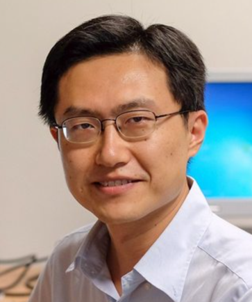

Program (Tuesday 2/26)
Session 1
Session 2
Session 3
Details
Christoph Treude (University of Adelaide, Australia)
NLP-Driven Access to Software Documentation

Software developers author a wide variety of documents written in natural language, ranging from commit messages and source code comments to documentation and questions or answers on Stack Overflow. To automatically make sense of these natural language artefacts and to make it easier for software developers to access the knowledge contained in them, we have developed various techniques that rely on natural language processing (NLP). This talk will highlight several such approaches, including a hypernym-discovery tool for software technologies, a badge-generator for sections of GitHub README files, and a task-based search interface for software documentation. In addition, we highlight challenges associated with applying NLP libraries to software artefacts. Our work suggests that while much of the knowledge needed by software developers is already available somewhere, much work is needed to enable developers to access it easily.
Christoph Treude is an ARC DECRA Fellow and a Senior Lecturer in the School of Computer Science at the University of Adelaide, Australia. He completed his PhD in Computer Science at the University of Victoria, Canada, in 2012 and received his Diplom degree from the University of Siegen, Germany, in 2007. The goal of his research is to advance collaborative software engineering through empirical studies and the innovation of processes and tools that explicitly take the wide variety of artefacts available in a software repository into account.
Yang Liu (Nanyang Technological University, Singapore)
Data Driven Software Security Analysis

Dr. Yang Liu graduated in 2005 with a Bachelor of Computing (Honours) in the National University of Singapore (NUS). In 2010, he obtained his PhD and started his post doctoral work in NUS, MIT and SUTD. In 2012 fall, he joined Nanyang Technological University (NTU) as a Nanyang Assistant Professor. He is currently an associate professor, Director of the cybersecurity lab in NTU, Program Director of HP-NTU Corporate Lab and Deputy Director of the National Satellite of Excellence of Singapore. Dr. Liu specializes in software verification, security and software engineering. His research has bridged the gap between the theory and practical usage of formal methods and program analysis to evaluate the design and implementation of software for high assurance and security. By now, he has more than 250 publications in top tier conferences and journals. He has received a number of prestigious awards including MSRA Fellowship, TRF Fellowship, Nanyang Assistant Professor, Tan Chin Tuan Fellowship, and 8 best paper awards in top conferences like ASE, FSE and ICSE. Currently, he is leading a large research team working on the state-of-the-art software engineering and cybersecurity problems
Raula Gaikovina Kula (Nara Institute of Science and Technology, Japan)
Intelligent Software Updates: Leveraging the Software Ecosystem to Support when to update library dependencies

The rise of library ecosystems and third-party dependencies usage is now common practice in contemporary software development. Library dependencies in constant need of updating, with newly added features and patches that fix bugs in older versions. Especially in terms of vulnerabilities, developers are faced with keeping the latest version, as this can lead to disastrous effects like the npm 'left-pad' incident. Furthermore, with massive ecosystems of library data available, in this presentation, I introduce the current state of research and practice, the challenges and how we work towards more intelligent updates of our software.
Raula Gaikovina Kula is an assistant professor at Nara Institute of Science and Technology. He received the Ph.D degree from Nara Institute of Science and Technology in 2013 and was a Research Assistant Professor at Osaka University from Sept. 2013 till April 2017. He is active in the Software Engineering (SE) community, serving as the Program Committee for premium venues for IEEE and ACM venues (i.e., ICSME, ESEM, MSR, SANER and ICPC), some as organising committee and reviewer SE related premium journals (i.e., IEEE TSE, Spring EMSE, Elsevier IST and JSS) and journals (i.e., IEICE and IPSJ). His current research interests include software ecosystems and libraries, code clones and code reviews.
Li Li (Monash University, Australia)
Mining Open Source Repositories for API Understanding

We are now at the age of big data, where lots of software and unstructured data are invading our daily life. To cope with this, mining software repositories (MSR) has emerged as a new research topic aiming at mining those data for uncovering interesting and actionable information about software systems and projects. As an example demonstrating the usefulness of MSR, this talk will focus on mining the Android framework code base to support the understanding of Android APIs. More specifically, this talk will attempt to answer API-related questions such as how do Android APIs evolve over time, how are Android APIs deprecated, how are Android APIs involved compatibility issues, etc.
Dr. Li Li is a lecturer (a.k.a., Assistant Professor) and a PhD supervisor at Monash University, Australia. Prior to joining Monash University, he spent 1.5 years as a Research Associate at the Serval group, SnT, University of Luxembourg. He received his PhD degree in computer science from the University of Luxembourg in 2016. He was named as one of the Top-3 most impactful earlier career software engineering researchers in the world. He has published over 40 research papers at prestigious conferences such as POPL, ICSE, ESEC/FSE, ASE, ISSTA, ISSRE, ICSME, etc. and prestigious journals such as IEEE Transactions on Reliability and IEEE Transactions Information Forensics & Security, etc. He received an ACM Distinguished Paper Award at ASE 2018, a FOSS Impact Paper Award at MSR 2018 and a Best Paper Award at the ERA track of IEEE SANER 2016. He is an active member of the software engineering and security community serving as reviewers or co-reviewers for many top-tier conferences and journals such as ICSME, SANER, TSE, TOSEM, TIFS, TDSC, TOPS, EMSE, JSS, IST, etc.
Shinsuke Matsumoto (Osaka University, Japan)
Towards Sophisticated Automatic Program Repair

The history of software development is always connected with the fight against software bugs. Automated program repair (APR) has been expected to end the fight. APR enables to automatically generate a source code patch that makes all failing test cases pass. The field of APR is still young, and there remain many challenges that we need to overcome. In this talk, I introduce fundamentals of the concept of APR. Then, I present and demonstrate a new APR system, named kGenProg, which aims to provide high-performance, high-extensibility, and high-portability program repair.
Shinsuke Matsumoto is an assistant professor of Software Engineering at Osaka University, Japan. He holds Ph.D. and M.S. degrees in Engineering from Nara Institute of Science and Technology. His research interests include mining software repositories, programming education, cloud computing and automated program repair.
He Jiang (Dalian University of Technology, China)
Bridging Semantic Gaps between Natural Languages and APIs with Word Embedding

Developers increasingly rely on text matching tools to analyze the relation between natural language words and APIs. However, semantic gaps, namely textual mismatches between words and APIs, negatively affect these tools. Previous studies have transformed words or APIs into low-dimensional vectors for matching; however, inaccurate results were obtained due to the failure of modeling words and APIs simultaneously. To resolve this problem, two main challenges are to be addressed: the acquisition of massive words and APIs for mining and the alignment of words and APIs for modeling. Therefore, we propose Word2API to effectively estimate relatedness of words and APIs. Word2API collects millions of commonly used words and APIs from code repositories to address the acquisition challenge. Then, a shuffling strategy is used to transform related words and APIs into tuples to address the alignment challenge. Using these tuples, Word2API models words and APIs simultaneously. Word2API outperforms baselines by 10%-49.6% of relatedness estimation in terms of precision and NDCG. Word2API is also effective on solving typical software tasks, e.g., query expansion and API documents linking.
He Jiang received the PhD degree in computer science from the University of Science and Technology of China, China. He is currently a Professor in Dalian University of Technology, China. He is also a member of the ACM and the CCF (China Computer Federation). He is one of the ten supervisors for the Outstanding Doctoral Dissertation of the CCF in 2014. His current research interests include Search-Based Software Engineering (SBSE) and Mining Software Repositories (MSR). His work has been published at premier venues like ICSE, SANER, and GECCO, as well as in major IEEE transactions like TSE, TKDE, TSMCB, TCYB, and TSC.
Minghui Zhou (Peking University, China)
Measuring the sustainability of open source ecosystem

Large-scale open source ecosystems such as the Linux kernel represent the critical computing infrastructure for our society. Both the scale and complexity of the ecosystems have undergone considerable changes in order to adapt to the constant changing environment (like technology and economy), which challenges the sustainability of both the software and the community. This report will introduce the challenges faced by large-scale ecosystems, and explain the factors that are critical for the evolution and sustainability of the ecosystems through mining software repositories.
Minghui Zhou is a professor at Peking University. She has been focusing on using the data recorded in vast open source and commercial software repositories to investigate how people develop software and how they interact with each other and with their environment to accomplish their tasks. Her research subjects range from the fluency and learning trajectory of developers to the micro-practices of projects, and to the health and sustainability of communities and ecosystems. She published more than 50 referred papers in premier International journals and conferences such as IEEE Transactions on Software Engineering (TSE), ACM Transactions On Software Engineering and Methodology (TOSEM), International Conference on Software Engineering (ICSE), and ACM SIGSOFT International Symposium on the Foundations of Software Engineering (FSE). She received the ACM SIGSOFT Distinguished Paper Award at FSE 2010. She has acquired peer-reviewed research funding and industry funding for over 10 million RMB. In 2018 she won The National Science Fund for Distinguished Young Scholars.
Lingxiao Jiang (Singapore Management University, Singapore)
Deep Code Learning? What We Represent Is What We Get

Program comprehension is traditionally labor-intensive and can take more than 50% of developer time during software development and maintenance. It is very desirable to automate program comprehension, to facilitate developers in understanding code, coding for new features, fixing bugs, detecting malware, etc. Deep neural networks are poised to fill the gap by learning from numerous code repositories accumulated on the Internet over the years and reusing the learned knowledge. How far are the techniques from realizing this dream of automated program comprehension? This talk shares some experiences in using various deep learning techniques for program classification, and discuss various challenges and opportunities in deep learning of code. Different from the notion of "big code", we notice that the amount of data really available for learning may still be insufficient for various software engineering tasks. And, encoding code and diverse contextual information about the code in a suitable, unified form for a chosen neural network can be a critical factor for successful learning. Much more efforts are still needed in exploring optimal combinations of code analysis, representation and learning techniques for better results for different tasks. An inclusive, failure-embracing, data-sharing community will be important for collectively achieving the goal of automated code comprehension.
Lingxiao Jiang is an Associate Professor in the School of Information Systems at Singapore Management University. His research focuses on software analysis and mining, exploring the combination of program analysis and machine learning techniques for software engineering problems. He has been working on various program representations for code similarity measurement, refactoring, code search, and automated testing & debugging. He received his PhD in Computer Science from University of California, Davis in 2009, and a Master's degree in Applied Mathematics and a Bachelor's degree in Information Science from the School of Mathematical Sciences at Peking University in 2003. He also had working experience as a test strategist at Nvidia Corporation before joining SIS at SMU.